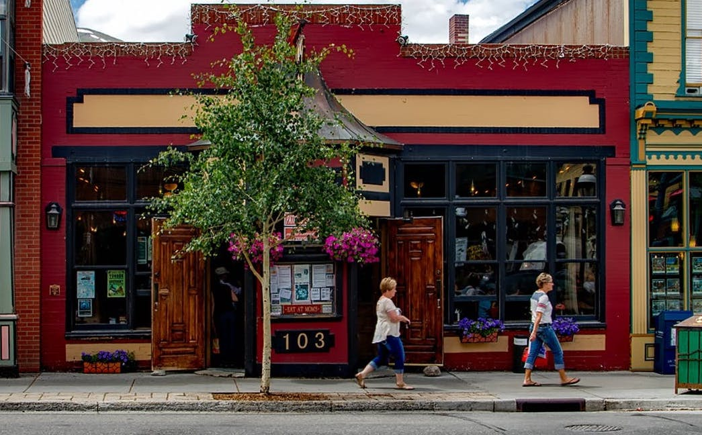

Durham House of Pets started in 2007. It was founded by Linda and Dave Carry. Their love of pets had always
been prevalent from the numerous pets they've had over the years. From dogs to cats to birds and horses.
Linda has been a vet for close to 25 years and has always had a love for animals since an early age. They
founded Durham House of Pets as a way to pass their love for animals to all. When it was first founded,
it sold solely dog products. As the years have gone by, they have now expanded to cats and fish. As their
business continues to expand they will look to bring on a wider selection of products. As the sole priority of Linda and Dave,
the founders have been able to focus all their attention on the growth of this pet shop. They have helped
some 50 plus college kids get a fun, well paying job. They have continued to serve the public by providing
knowledgeable service to its customers. Going forward, they look to continue being an active and supporting
business to the town of Durham.
The key goal of Durham House of Pets is to provide safe products by educating the consumer. Each employee hired
goes through a 2 month training process to become educated on pet health and safety. They then take a test,
created by Linda, to ensure they are able to provide the customer with the best quality service. Every employee
goes through two training sessions per month to stay updated on new products. With all employees having a love
for pets allows for the assurance that your fur babies will be taken care of. Linda is the only buyer of products
at Durham House of Pets. She searches far and wide to find the safest most top quality products out there. With her
experience as a vet, she only buys products that are safe for animals. She also uses all the products that she sells at home
with her own pets. Her confidence in what she buys gives all the people who buy their products to have confidence as well.